Práctica 2.2
Autenticación en Nginx
Javier Rider Jimenez
1. Introducción y paquetes necesarios
Primero que nada debemos tener funcionando la Practica 2.1, en mi caso tuve que modificar el archivo host de mi maquina física para cambiar la IP
Una vez que tenemos funcionando la practica anterior debemos comprobar que tenemos el paquete instalado de la herramienta OpenSSL, para crear las contraseñas cifradas. Este comando comprueba que lo tenemos instalado y si no, lo instala.
dpkg -l | grep openssl
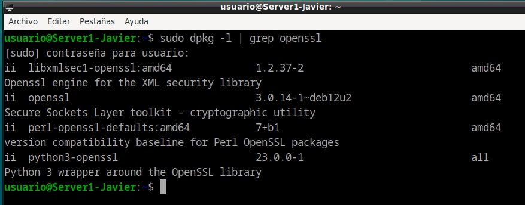
2. Creación de usuarios y contraseñas de acceso web
Vamos a crear 2 usuarios con sus dos respectivas contraseñas. estos usuarios tendrán guardada su contraseña de manera cifrada
Para crear el usuario Javier usaremos este comando, indicando también donde se guarda la contraseña
sudo sh -c "echo -n 'Javier:' >> /etc/nginx/.htpasswd"
con este le añadimos una contraseña al usuario anteriormente creado, pidiendo una contraseña que después será cifrada por OpenSSL
sudo sh -c "openssl passwd -apr1 >> /etc/nginx/.htpasswd"
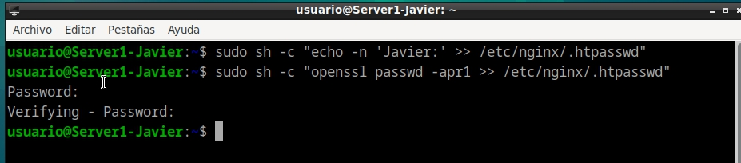
Repetimos proceso con el usuario Rider
sudo sh -c "echo -n 'Rider:' >> /etc/nginx/.htpasswd"
sudo sh -c "openssl passwd -apr1 >> /etc/nginx/.htpasswd"
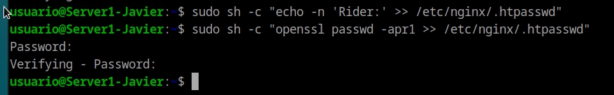
Podemos comprobar que se han creado los usuarios correctamente y que la contraseña esta totalmente cifrada
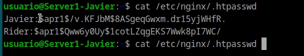
3. Configuración de Nginx para autentificación básica
Para aplicar la autentificacion basica debemos hacer modificaciones en sites-avalible/ryder. Con el siguiente comando
sudo nano /etc/nginx/sites-available/nombre_web
Una vez aqui debemos añadir 2 lineas a location. estas se encargaran de solicitar el usuario-contraseña y contrastarlo con la lista de usuario-contraseña que tenemos en el servidor. debemos añadir las siguientes lineas
auth_basic "Área restringida";
auth_basic_user_file /etc/nginx/.htpasswd;
Quedando algo similar a esto
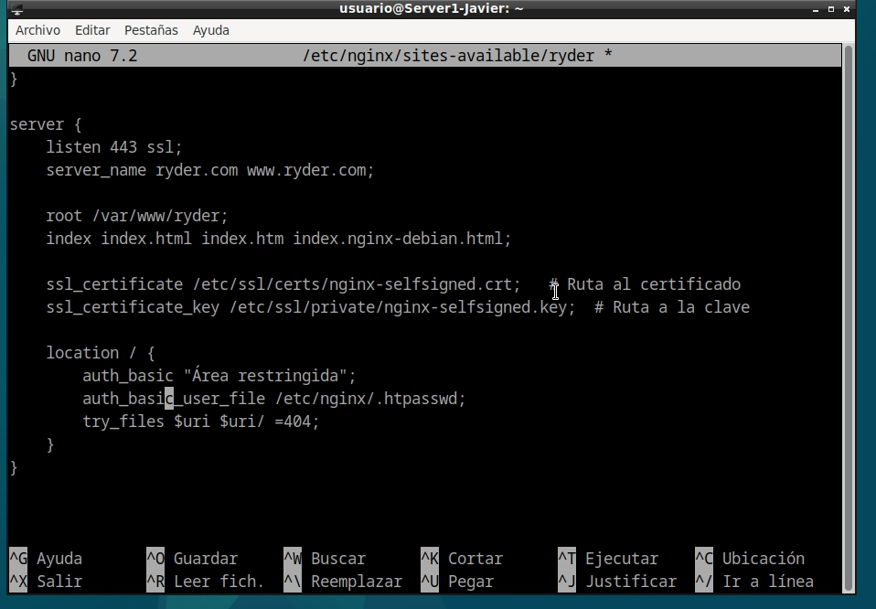
para acontinuacion reiniciar el servicio para aplicar el cambio
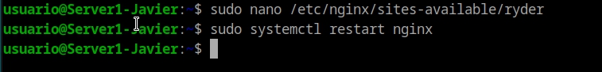
Tras esto si vamos a nuestra web htpps://www.ryder.compara acceder y visualizar la web primero debemos logearnos correctamente. debemos tener en cuenta que una vez introduzcamos credenciales validas se guardaran en las cookies del navegador, por lo que no lo volvera a pedir, si queremos repetir el proceso podemos hacer ctrl + shift + r, ctrl + F5, abrir una ventana privada en el navegador o borrar el historial
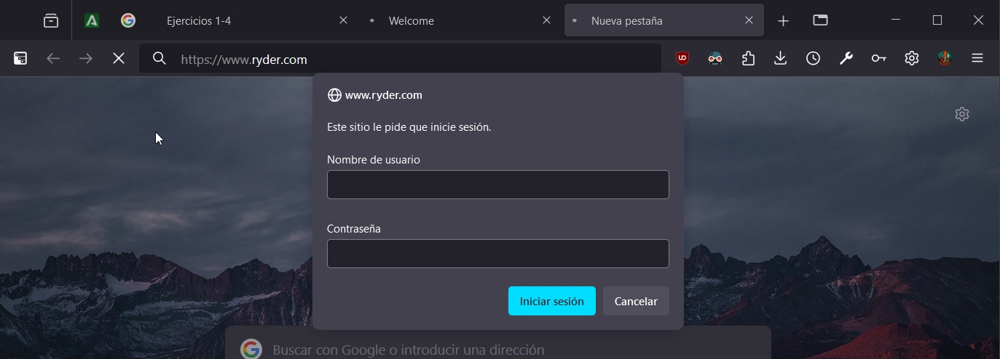
Para probar que no funciona si no ponemos credenciales validas podemos intentar logearnos con un usuario que no hemos creado, en mi caso pepe. debera darnos un error 403. como pepe no es un usuario autentificado nos redirige a la pagina del error
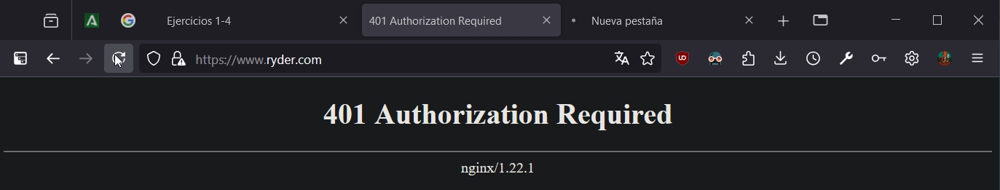
Para probar que si funciona, actualizamos la pagina, probaremos a logearnos con un usuario que si exista, en mi caso Javier.

como tanto el usuario como la contraseña de Javier estan almacenadas en .htpasswd nos deja pasar y visualizar la web.
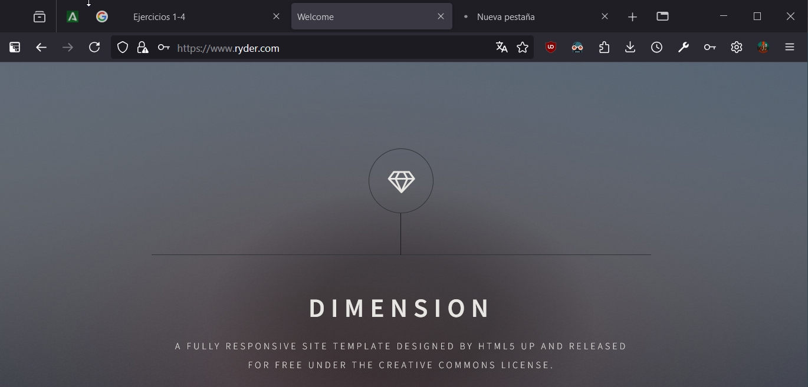
Ahora podemos comprobar el registro de accesos para comprobar que todo se ha registrado. Como podemos ver esta registrado que se ha intentado acceder tanto con pepe como con Javier
sudo nano /var/log/nginx/access.log
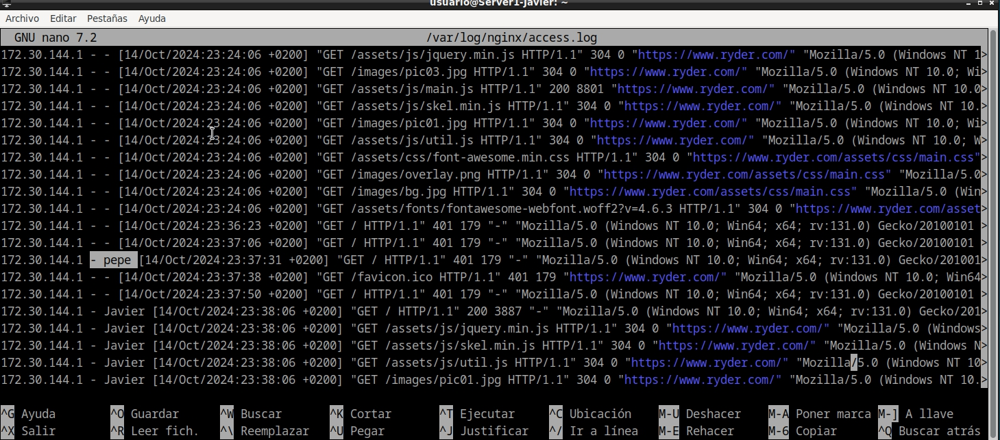
pero si vamos al registro de errores veremos que solo hay un registro, indicando que el usuario pepe no esta en .htpasswd
sudo nano /var/log/nginx/error.log
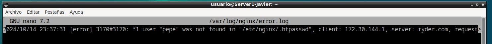
3.1. Autentificación en contacto.html
Para poder autentificarnos en un apartado concreto de la web he tenido que hacer algunas modificaciones al index.html dado que este index trae todos los apartados en un mismo archivo y por limitaciones no podemos autentificar por apartados si todo esta en el mismo archivo.
Para solucionar esto, antes de modificar la configuración, debemos crear una copia de index.hmtl llamada (en mi caso) contacto.html. Este contacto.html es idéntico a index, con la diferencia de que hemos borrado todos los <articulos> que no sean el de contacto. Considero que esta explicación es suficiente.
Una vez aclarado y creado contacto.html podemos proceder. Debemos modiciar una vez más sites-available/ryder. Debemos comentar las siguientes lienas:
# auth_basic "Área restringida";
# auth_basic_user_file /etc/nginx/.htpasswd;
Para añadir un nuevo location específico para contacto.html ahora al acceder a la web principal no nos pide contraseña. Pero para entrar al apartado Contacto nos obliga a autentificarnos
location /contacto.html {
auth_basic "Area restringida";
auth_basic_user_file /etc/nginx/ .htpasswd;
}
debiendo quedar algo similar a esto
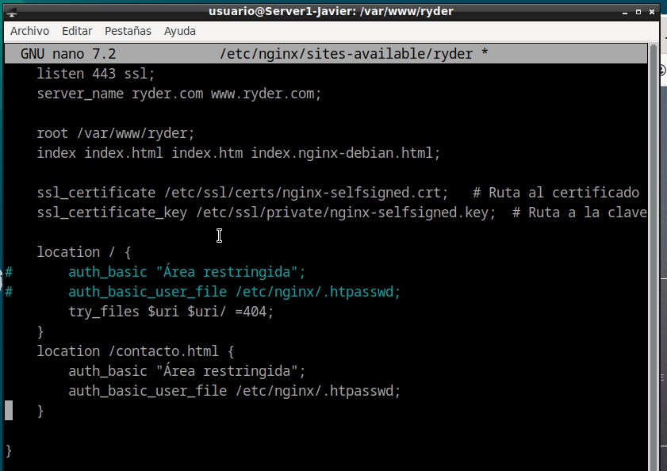
Por último reiniciar el servicio antes de poder empezar a probar lo

Ahora que esta reiniciado servicio nos dirigimos a la direccion https://www.ryder.com/contacto.html y como podemos ver nos pide autentificación antes de mostrar el formulario de contacto
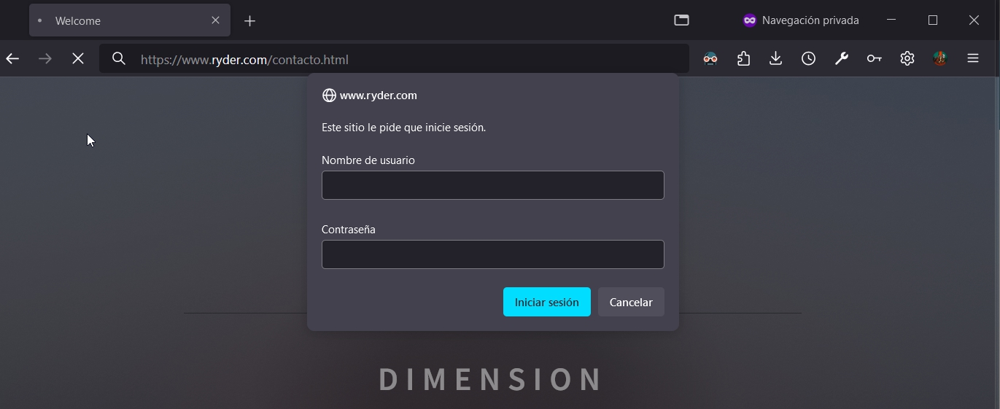
4. Autentificación básica con restricción por acceso por IP
Para realizar este apartado no es necesario deshacer el apartado 3.1.
4.1 Denegar una IP
Para denegar el acceso a una IP concreta debemos modificar una vez mas sites-available/ryder. Descomentamos las lineas comentadas del location y añadimos la linea deny IP esta ip sera la que no podra acceder a la web, probaremos con la IP de la maquina fisica. Tambien se podria usar deny all para bloquear todas las IPs
deny 172.30.144.1;
auth_basic "Area restringida";
auth_basic_user_file /etc/nginx/ .htpasswd;
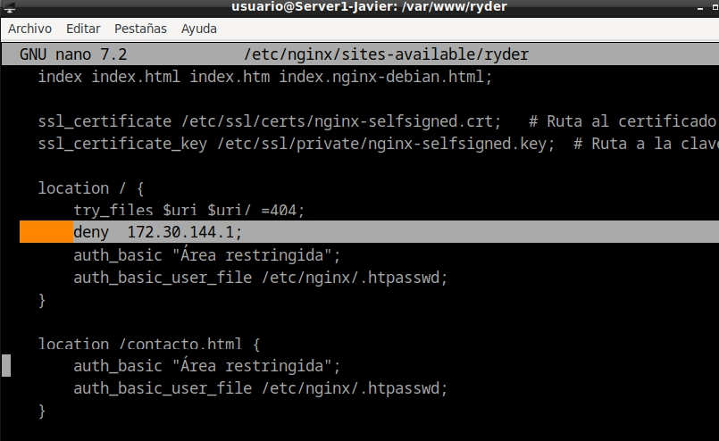
tras esto reiniciamos el servicio
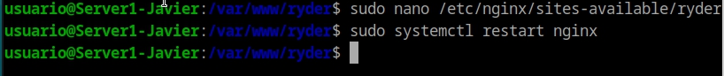
si ahora, desde la maquina fisica, intentamos acceder a la web nos dará un error 403. pues no tenemos permiso para acceder con esta ip
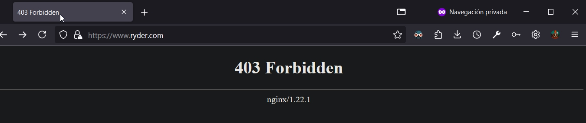
4.2. Permitir IPs
Para permitir IPs concretas haremos el mismo proceso que el anterior pero utilizando allow IP. En solitario, sin deny all, es inútil en pero será aclarado en el siguiente punto. allow ip o allow all permite el acceso a las IPs indicadas, al contrario que deny
satisfy all;
allow 172.30.144.1;
auth_basic "Area restringida";
auth_basic_user_file /etc/nginx/ .htpasswd;
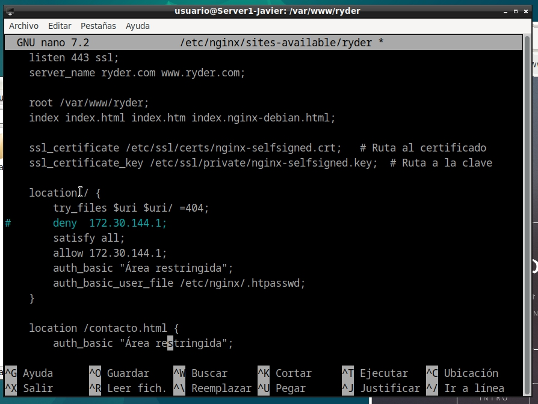
tras esto reiniciamos el servicio
si ahora, desde la máquina física, intentamos acceder a la web, nos pedirá el loguearnos, se explica en el siguiente punto
4.3. Satisfy all
En el apartado anterior he añadido satisfy all;, esta configuración se utiliza para permitir el uso cambiando de una ip valida (con allow o deny) y ademas ser un usuario valido. si una de las dos validaciones no es correcta el usuario no puede acceder a la web.
en cambio si usamos satisfy any; mientras el usuario o la ip sean validas el usuario podrá acceder a la web
5. Cuestiones
5.1. Cuestion 1:
Supongamos que yo soy el cliente con la IP 172.1.10.15 e intento acceder al directorio
web_muy_guayde mi sitio web, equivocándome al poner el usuario y contraseña. ¿Podré acceder?¿Por qué?
location /web_muy_guay {
#...
satisfy all;
deny 172.1.10.6;
allow 172.1.10.15;
allow 172.1.3.14;
deny all;
auth_basic "Cuestión final 1";
auth_basic_user_file conf/htpasswd;
}
El usuario no podra acceder a la web. Tiene una IP permitida dentro de la configuracion, pero necesita tener tanto una IP valida como autentificarse correctamente. esto debido a la presencia de satisfy all;
5.2. Cuestión 2
ask "Cuestión 1" Supongamos que yo soy el cliente con la IP 172.1.10.15 e intento acceder al directorio web_muy_guay de mi sitio web, introduciendo correctamente usuari y contraseña. ¿Podré acceder?¿Por qué?
location /web_muy_guay {
#...
satisfy all;
deny all;
deny 172.1.10.6;
allow 172.1.10.15;
allow 172.1.3.14;
auth_basic "Cuestión final 2: The revenge";
auth_basic_user_file conf/htpasswd;
}
En esta ocasión si se podrá acceder a la web pues se utiliza una IP admitida y una autentificación correcta.
5.3. Cuestión 3
Supongamos que yo soy el cliente con la IP 172.1.10.15 e intento acceder al directorio web_muy_guay de mi sitio web, introduciendo correctamente usuario y contraseña. ¿Podré acceder?¿Por qué?
location /web_muy_guay {
#...
satisfy any;
deny 172.1.10.6;
deny 172.1.10.15;
allow 172.1.3.14;
auth_basic "Cuestión final 3: The final combat";
auth_basic_user_file conf/htpasswd;
}
Podrá acceder. dado que la presencia de satisfy any indica que teniendo una ip valida o introduciendo unas credenciales correctas podemos acceder a la web
5.4. Cuestión 4
A lo mejor no sabéis que tengo una web para documentar todas mis excursiones espaciales con Jeff, es esta: Jeff Bezos y yo
Supongamos que quiero restringir el acceso al directorio de proyectos porque es muy secreto, eso quiere decir añadir autenticación básica a la URL:Proyectos
Completa la configuración para conseguirlo:
original:
server {
listen 80;
listen [::]:80;
root /var/www/freewebsitetemplates.com/preview/space-science;
index index.html index.htm index.nginx-debian.html;
server_name freewebsitetemplates.com www.freewebsitetemplates.com;
location {
try_files $uri $uri/ =404;
}
}
solucionado:
server {
listen 80;
listen [::]:80;
root /var/www/freewebsitetemplates.com/preview/space-science;
index index.html index.htm index.nginx-debian.html;
server_name freewebsitetemplates.com www.freewebsitetemplates.com;
location / {
try_files $uri $uri/ =404;
}
location /Proyectos/ {
auth_basic "Restricted Area"; # Mensaje que verá el usuario al intentar acceder
auth_basic_user_file /etc/nginx/.htpasswd; # Ruta del archivo de contraseñas
try_files $uri $uri/ =404;
}
}